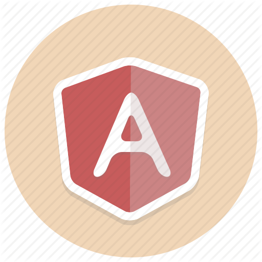

<ion-header>
  <ion-toolbar color='primary'>
    <ion-title>
      MySocial Feed
    </ion-title>
  </ion-toolbar>
</ion-header>

<ion-content fullscreen padding scroll-y="false">

  <h1>This is Ionic</h1>

  <!-- <ion-slides>
    <ion-slide>
      
      <h2>Welcome to the <b>ICA</b></h2>
      <p>The <b>ionic conference app</b> is a practical preview of the ionic framework in action, and a demonstration of
        proper code use.</p>
    </ion-slide>

    <ion-slide>
      
      <h2>What is Ionic?</h2>
      <p><b>Ionic Framework</b> is an open source SDK that enables developers to build high quality mobile apps with web
        technologies like HTML, CSS, and JavaScript.</p>
    </ion-slide>

    <ion-slide>
      
      <h2>What is Ionic Pro?</h2>
      <p><b>Ionic Pro</b> is a powerful set of services and features built on top of Ionic Framework that brings a
        totally new level of app development agility to mobile dev teams.</p>
    </ion-slide>

    <ion-slide>
      
      <h2>Ready to Play?</h2>
      <ion-button fill="clear">Continue <ion-icon slot="end" name="arrow-forward"></ion-icon>
      </ion-button>
    </ion-slide>
  </ion-slides> -->

  <ion-card *ngFor="let item of postToShow">
    
    <ion-card-content>From: {{item.from}}</ion-card-content>
    <ion-card-content>{{item.createdOn | date: 'MMM dd yyyy HH:mm'}}</ion-card-content>
    <ion-card-content>{{item.message}}</ion-card-content>
  </ion-card>

</ion-content>